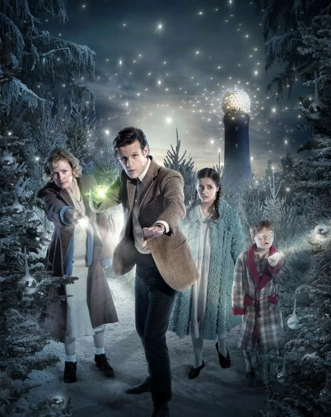
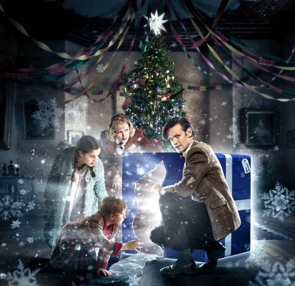
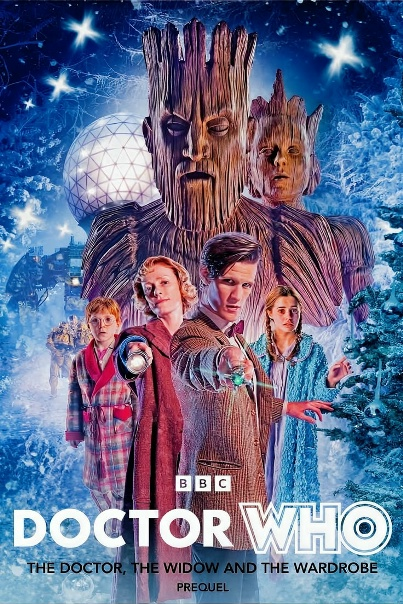

Эра Одиннадцатого Доктора
<<< НАЗАД ||| Доктор, вдова и платяной шкаф ||| ДАЛЬШЕ >>>
или
<<< НАЗАД к спин-офф сериалу: "Торчвуд"
<<< НАЗАД к мини-эпизодам
ДАЛЬШЕ >>> к мини-эпизодам
MVO [TVShows], [Кириллица], [Baibako], [ВГТРК], [Alexfilm&Novafilm] или Original [ENG] Субтитры: Русские {TrueTransLate} + Английские | |
 | |
The Doctor, the Widow and the Wardrobe
рождественский спецвыпуск
25 декабря 2011
Формат: 60-минутный эпизод
| Варианты озвучек: | * Разные: смотрите по инструкции чаще всего это нулевая серия седьмого сезона |
|---|---|
| Скачивание и просмотр: |
Лирическая и оригинальная рождественская история… Однажды по дороге домой Мэдж Арвелл помогает раненому космическому ангелу, который, в благодарность за спасение, просит ее загадать любое желание. Вскоре Мэдж об этом забывает, но у нее не все так здорово, как хотелось бы: двое детей, муж, пропавший без вести и Рождество. Решив покинуть разрушенный войной Лондон, она вспоминает о странной ситуации. И не зря. Космический ангел не обманул – Мэдж учится быть храбрее и сильнее, и подарить собственным детям лучшее Рождество… Ее желание может сбыться!





